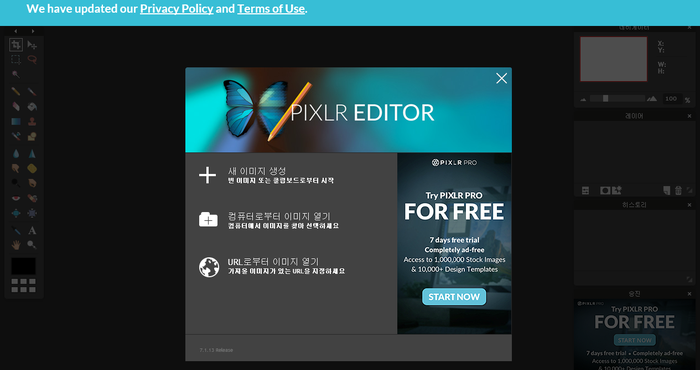
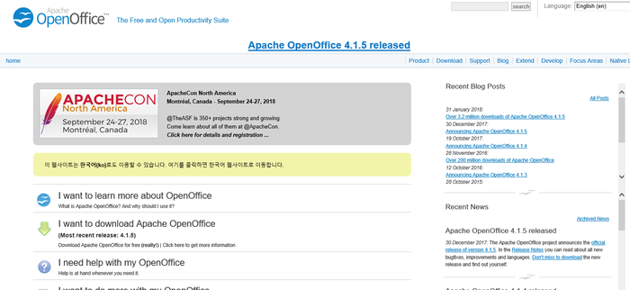

과제나 리포트 쓸때 유용한 사이트

1.PIXLR
:
무료로 포토샵
기능을 이용할 수 있음

2.OpenOffice
: 마이크로오피스가 없을때
대신 사용할 수
있는 사이트
3.Pixabay
:
저작권 걱정없이
고화질 이미지를 다운 받을 수 있음.
4.Presentation Magazine
:
다양한 파워포인트 서식
을 다운 받을 수 있음
5.RISS
:
학위논문,학습자료
를 무료로 열람 가능, 레포트 쓸때 유용